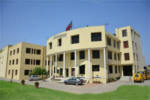

<HTML>
<HEAD><style>body {background-image:url("Background.jpg");
              padding:0;
              margin:0;}</style></HEAD></html>
<html><TITLE>MY SCHOOL </TITLE>
<BODY color=silver ></BODY></HTML>
<HTML>
<BODY><TABLE border="5px" bgcolor=white STYLE="POSITION:ABSOLUTE;TOP:20%" WIDTH=100%>
<TR>
<TD><font color="DARK yellow"><center><A HREF="my first html.html" COLOR=WHITE>HOME</A></center></font></TD>
<TD><font color="DARK yellow"><center><A HREF="ABOUT.HTML">ABOUT US</A></center></font></TD>
<td><font color="DARK yellow"><center><A HREF="ADMISSION.HTML">ADMISSION</A></center></font></TD>
<TD><font color="DARK yellow"><center><A HREF="facilities1.html">FACILITIES</a></center></font></TD>
<TD><font color="DARK yellow"><center><A HREF="school library.html">SCHOOL LIBRARY</a></center></font></TD>
<TD><font color="DARK yellow"><center><A HREF="activity center.html">ACTIVITY CENTER</a></center></font></TD>
<TD><font color="DARK yellow"><center><A HREF="STUDENT PARENT PORTAL.HTML">STUDENT & PARENT PORTAL</A></center></font></TD>
<TD><font color="DARK yellow"><center><A HREF="infrastructure.html">INFRASTRUCTURE</a></center></font></TD>

</TR></TABLE></BODY></HTML>
<HTML>
<HEAD></HEAD>
<TITLE></TITLE>
<BODY><B><FONT COLOR=RED SIZE="5PX"><SPAN STYLE="POSITION:ABSOLUTE;TOP:25%;LEFT:0%"/>WELCOME TO INDIRAPURAM PUBLIC SCHOOL</B>
<HR WIDTH="70%" STYLE="POSITION:ABSOLUTE;TOP:27%"></HR>

<FONT COLOR="WHITE" SIZE="3PX"><SPAN STYLE="POSITION:ABSOLUTE;TOP:30%;LEFT:25%"/>Indirapuram Public School, Pratap Vihar started its journey as Taposthali School in 2004 and<BR>
 made a niche for itself in the hearts and minds of the people throughout Ghaziabad in<BR>
 a very short span of time. It has become the second link in the chain of Indirapuram Public<BR>
 School.<BR><BR>
 The School has been growing in strength and enjoying achievements in all directions of<BR>
 educational endeavors from academics to sport and from music and dance to computers.<BR>
 Efforts of the students are noteworthy as it is they who have brought name and fame to<BR>
 the school. Above all there is a focus on value education and a renewed effort to pursue<BR>
 and enrich our basic moral values and cultural heritage coupled with a sense of social<BR>
 responsibility.<BR><BR>
 Our role and responsibility is to give students a lofty vision, an intellectual conviction and<BR>
 inspire them to strive for realizing it through their daily work in life. The children are<BR>
 helped to develop the will, strength, fearlessness through the process of dedication so<BR>
 that the children can walk the difficult paths and achieve their goals. The school<BR>
 endeavours to provide an environment congenial to learning coupled with highly qualified<BR>
 and dedicated teachers who are not only talented but also great motivators. The pursuit of<BR>
 excellence is encouraged at Indirapuram Public School on the belief that every child is<BR>
 bestowed with the quality to produce work and excel.
</FONT>
<a href="message from patron.html"></a>


</BODY></HTML>
<html>

<body> <table bgcolor="red" style="position:absolute;top:95%;left:0%" width="100%" height="10%">
<tr><td><font size="2px" color="white">Phone: 0120-2840031, 2741466<br>
Admission Counsellor: 09560994650 <br>
E-Mail	: indirapuramps.pv@gmail.com, principal.indirapuramps.pv@gmail.com<br></font>
<SPAN STYLE="POSITION:ABSOLUTE;TOP:45%;LEFT:70%"/><A HREF="my first html.html"><FONT SIZE="2PX" COLOR="WHITE">HOME</font></A>|<A HREF="ABOUT.html"><FONT COLOR=WHITE size=2px>ABOUT US</FONT></A>|<A HREF="contactus.html"><FONT SIZE="2PX" COLOR="WHITE">CONTACT US</font></A>               
</table></div></body></html>